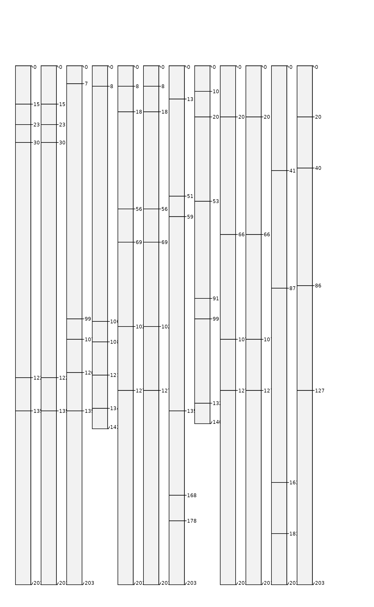

This function shuffles the horizon data or physical ordering of horizons within profiles in a SoilProfileCollection object.
Usage
shuffle(x, mode = c("data", "horizon"), replace = FALSE, size = NULL)Arguments
- x
SoilProfileCollection- mode
character, one of 'data' or 'horizon'
'data': shuffle the data associated with physical horizons, making no change to the original horizon thickness and horizon IDs
'horizon': shuffle physical horizons, horizon top and bottom depths are re-calculated
- replace
logical, replacement argument to
base::sample(), only used whenmode = 'horizon'- size
integer, size argument to
base::sample(), only used whenmode = 'horizon'
Examples
data('osd', package = 'aqp')
o <- osd
# shuffling of data only
o.d <- shuffle(o, mode = 'data')
# shuffling of horizons
o.h <- shuffle(o, mode = 'horizon')
# shuffling / sampling with replacement
o.h2 <- shuffle(o, mode = 'horizon', replace = TRUE)
# add method to IDs
profile_id(o.d) <- sprintf("%s\ndata", profile_id(o.d))
profile_id(o.h) <- sprintf("%s\nhz", profile_id(o.h))
profile_id(o.h2) <- sprintf("%s\nhz R", profile_id(o.h2))
# combine into single SPC
g <- combine(o, o.d, o.h, o.h2)
# graphical comparison
op <- par(mar = c(0, 0, 0.5, 2.5))
plotSPC(g, name.style = 'center-center', cex.names = 0.66, width = 0.3, cex.id = 0.75)

par(op)